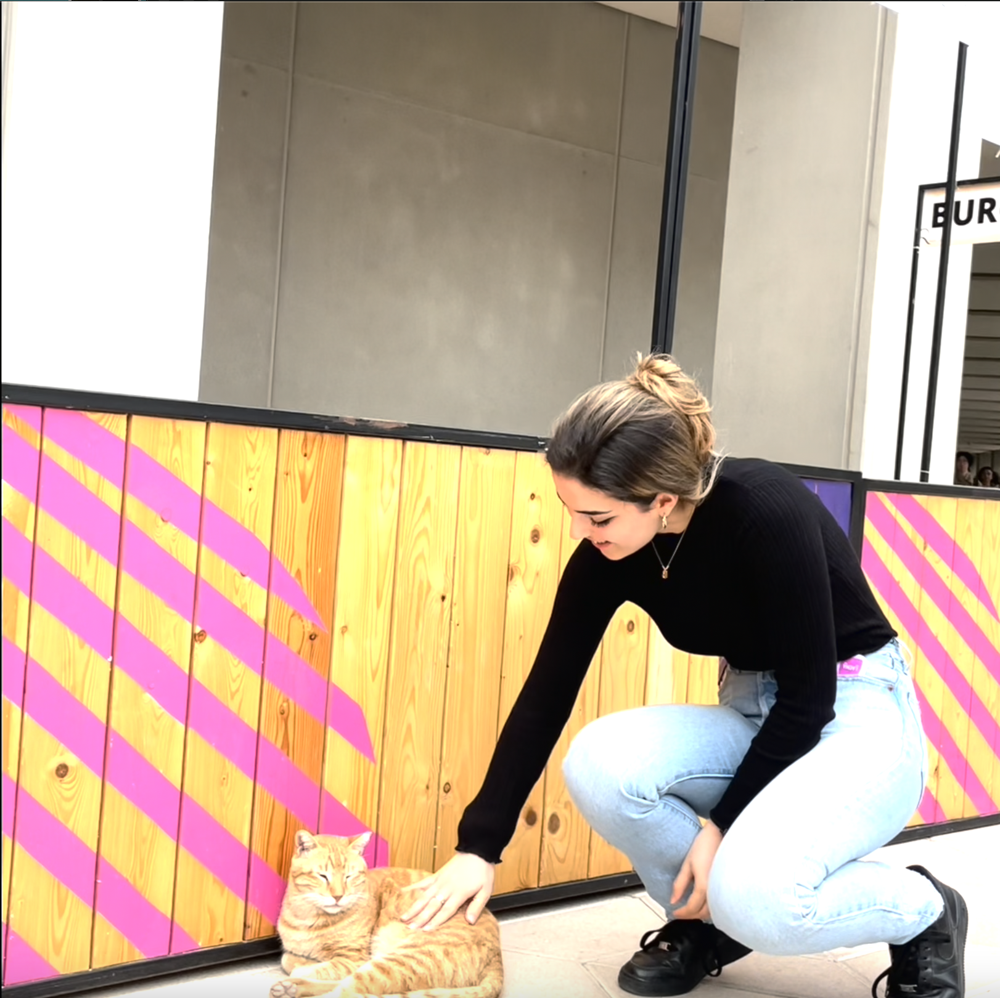

The creators of this video are Hana Selmani and Mbebo Nonna. We are students at New York University Abu Dhabi, and we are currently taking a class called Communications Lab. We created this video as an assignment for this class - we were challenged to plan, film and edit this video in 30 minutes. Neither of us have any film-making or video editing experience, so this was a very interesting challenge to take on. We used iMovie for iPhone to edit this video, hence the very simplistic editing, and the standard iMovie music library background music.
Our campus is small, secluded, and home to many stray cats. There is a group of volunteers on campus who took in these stray cats and medicate, house and feed the cats. These cats bring us a lot of joy on a regular basis. Being university students or researchers, we are under a lot of stress and pressure, and having furry little friends all around us helps lift our moods. With this video we wanted to show how adorable these cats are and how they live their lives on campus, and we approached this with a lot of humor. We had a lot of fun with the captions, sound effects and dramatic music. If you want to see more of our campus cats, check out the NYUAD campus cats instagram pages: @campus.cats and @campuscatsnyuad.
Click on the image to see more!
